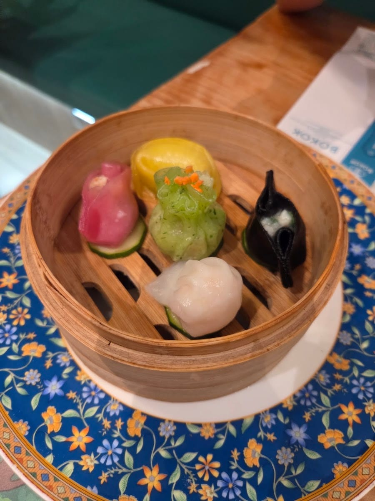
Dim sum al vapore
- Ravioli misti al vaporei più amati, colorati a mano
- Xiao long baoi ravioli ripieni di brodo
- Shumai & ravioli ai funghiun classico del banco
Via Paolo Sarpi · Chinatown
珍宝阁 · la stanza dei tesori
Mangeresti dei ravioli cinesi in una biblioteca? Da Bokok il dim sum fatto a mano di Hong Kong si gusta tra pareti coperte di libri — perfino di poesia, da sfogliare mentre aspetti. Una sala da tè, e uno scrigno di tesori.
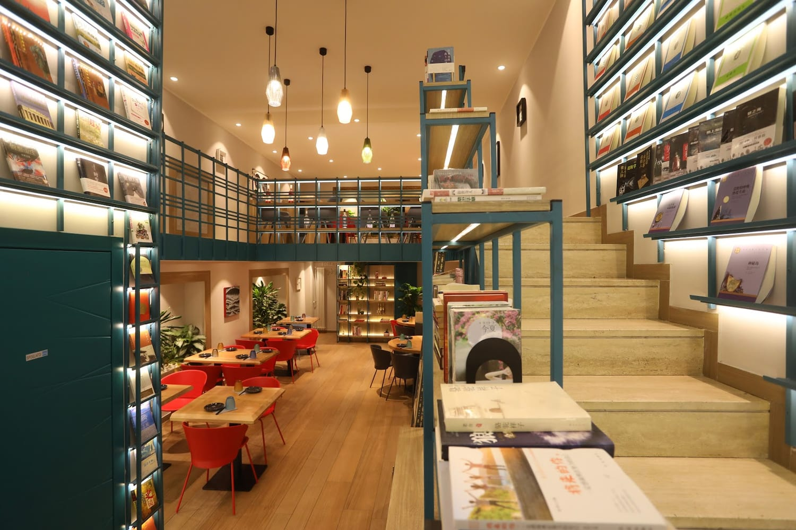
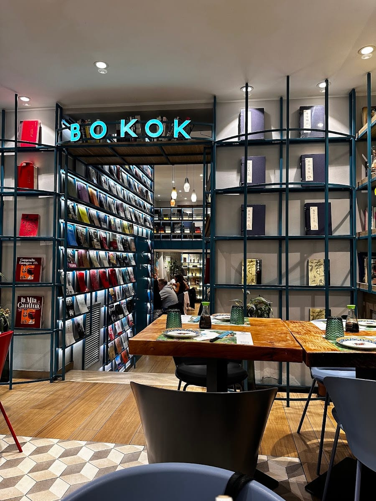
La biblioteca
Bokok vuol dire «la stanza dei tesori» (珍宝阁). Dal 2019, in piena Chinatown, è una cha chaan teng — la sala da tè in stile Hong Kong — con una sorpresa: le pareti, dal pavimento al soffitto, sono scaffali di libri.
Ci si siede a un tavolo di legno, si prende un libro di poesia in attesa dei ravioli, e si mangia come in una biblioteca. I tesori, qui, sono due: quelli da leggere e quelli da assaggiare.
Fatto a mano
Dalla finestra sulla via puoi vedere i cuochi chiudere i ravioli a mano, uno per uno, prima di metterli a vapore. Niente scorciatoie: è il gesto lento che fa la differenza tra un raviolo e un dim sum.
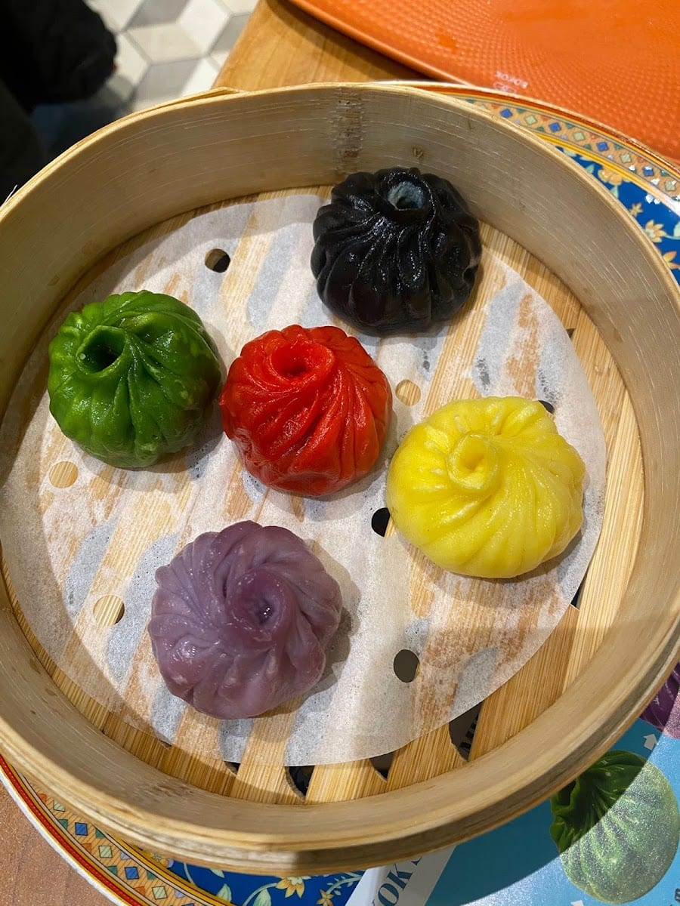
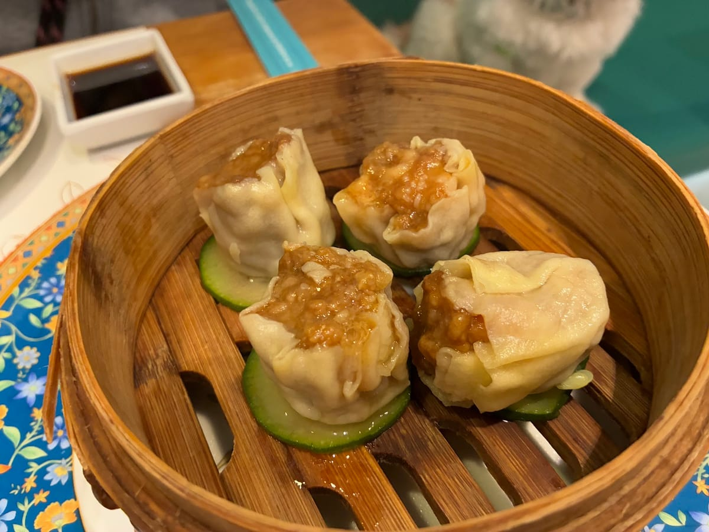
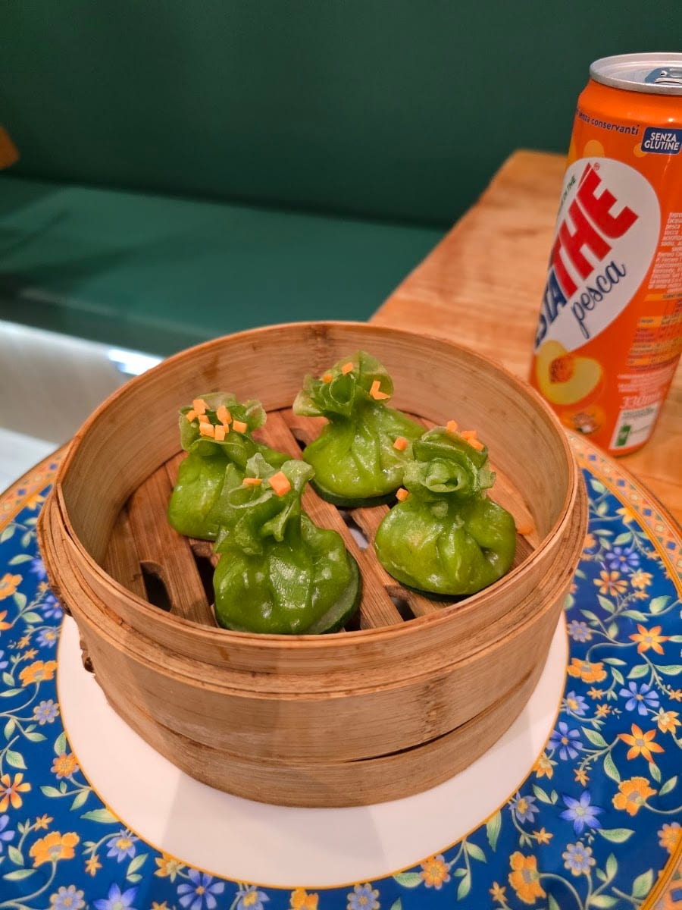
Al tavolo
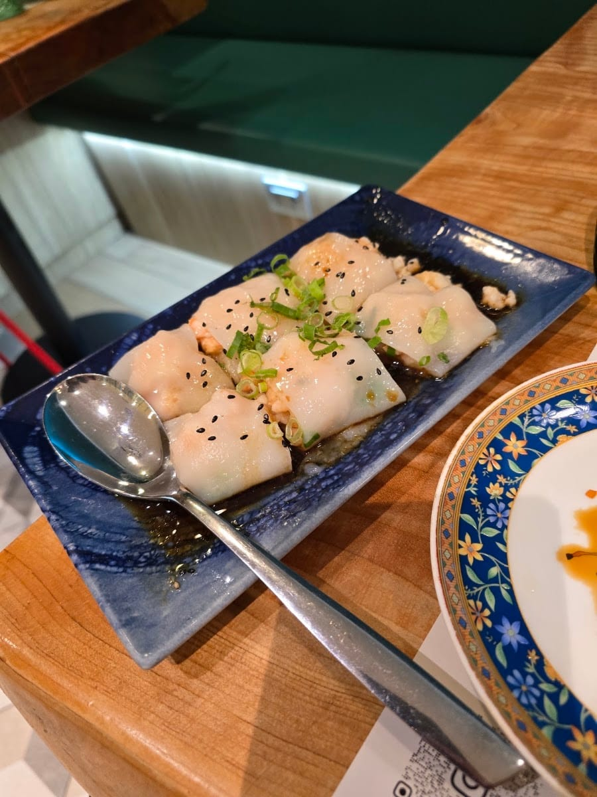
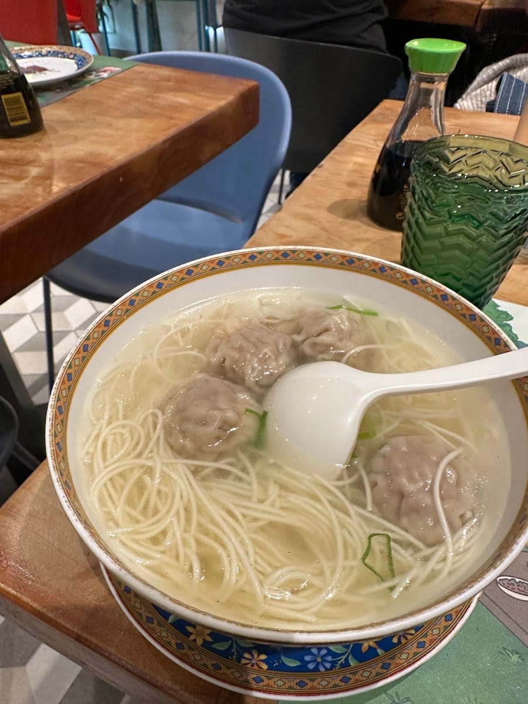
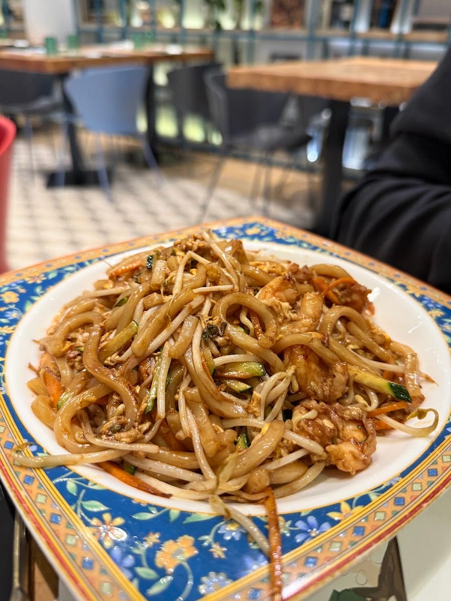
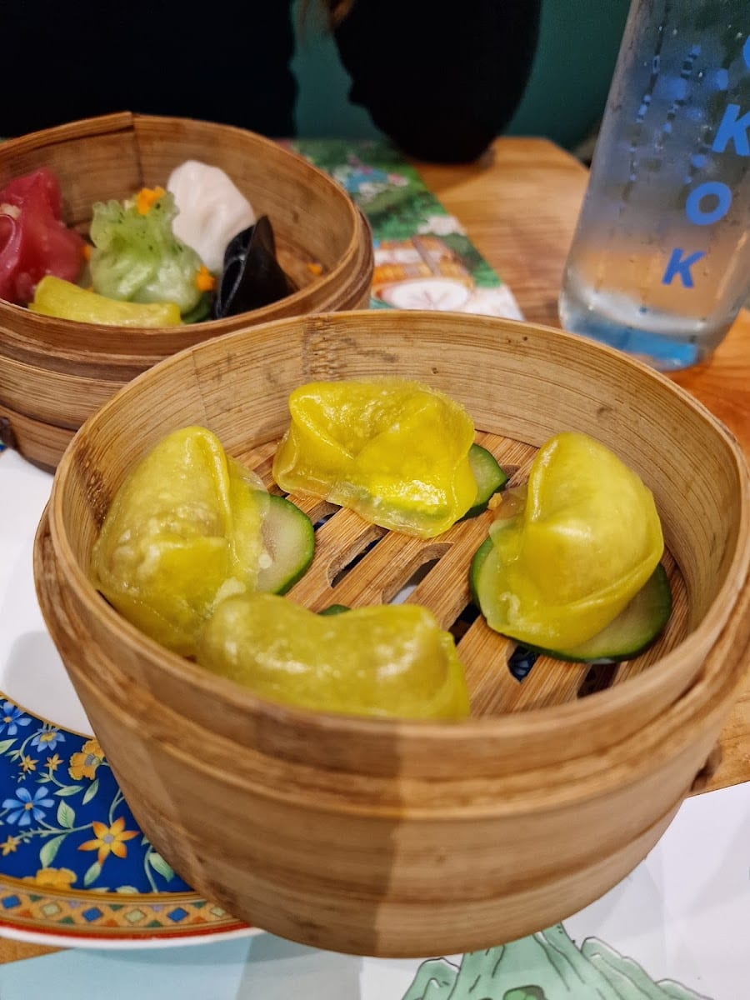
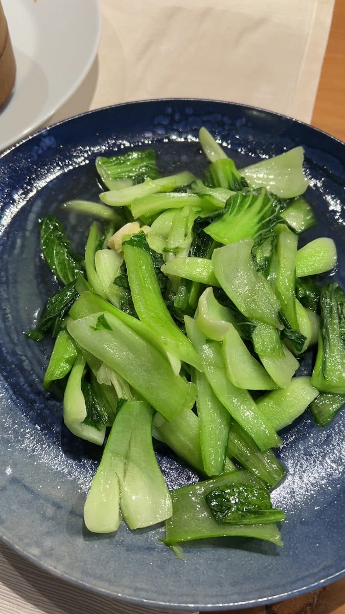
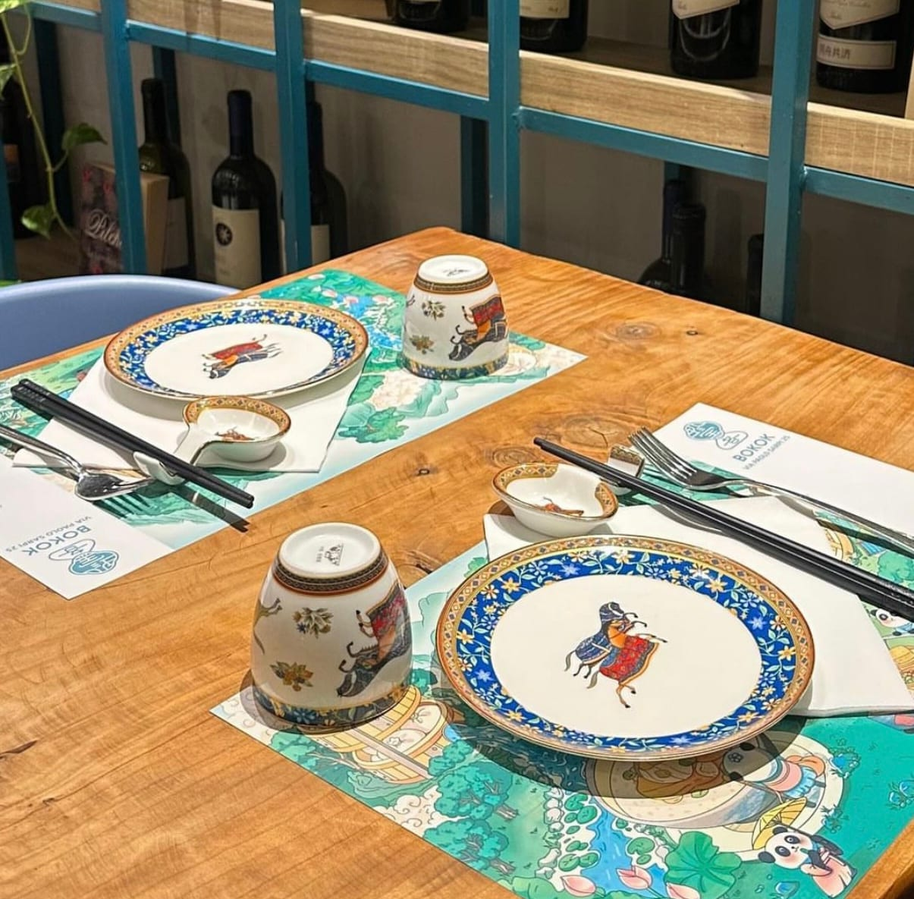
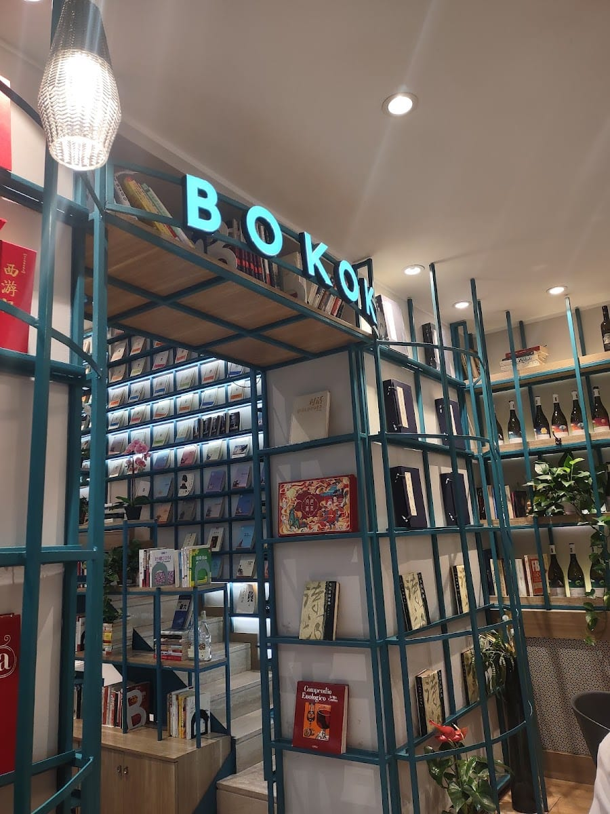
Le voci
L'esperienza complessiva è stata molto positiva. La location è esclusiva e curata nei dettagli, con un ambiente elegante e diverso da tutti gli altri.
Maria Giovanna Milieni · ★★★★★
So yummy — I loved the cetrioli agropiccante and everything we got was amazing. Very tasty, flavourful food, and the restaurant has a lot of fun decor. Would definitely come back!
Daniela Macedo · ★★★★★
Abbiamo trovato eccezionali i bao classici, il pollo fritto piccante e l'anatra. Un locale che vale la sosta.
Recensione Google · ★★★★★
Apprezzato il riso con cotoletta e i ravioli ripieni di brodo… SUPER!
Recensione Google · ★★★★★
Locale di cibo fusion molto buono, in piena zona Sarpi. E l'idea della biblioteca è splendida.
Recensione Google · ★★★★★
Dove siamo
FAQ
In Via Paolo Sarpi 25, nel cuore di Chinatown a Milano. La sala è una biblioteca: le pareti sono coperte di libri.
Cucina di Hong Kong e cantonese: dim sum fatto a mano, ravioli al vapore, bao, noodles, ramen, involtini di spaghetti di riso, anatra arrosto e i grandi classici.
Sì: Bokok è «la stanza dei tesori» (珍宝阁), una sala da tè in stile Hong Kong con le pareti coperte di libri, anche di poesia, da sfogliare mentre si aspetta.
Tutti i giorni con orario continuato: da lunedì a sabato 11:30–23:30, domenica 11:30–22:00. Si può prenotare.